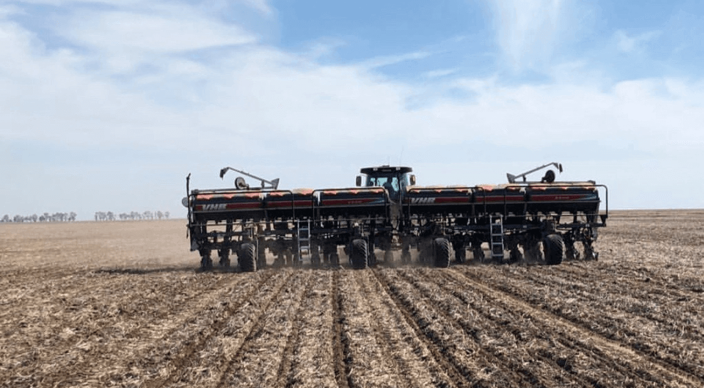

En Agropecuaria La Criolla ofrecemos un servicio de engorde de hacienda acorde a tus objetivos.
Nuestra invernada sobre recursos pastoriles
Contamos con una gran ventaja competitiva frente a otros sistemas ganaderos: poseemos recursos pastoriles que nos permiten recriar animales livianos, previo a su ingreso al feedlot, evitando su engrasamiento temprano, y a un bajo costo del kilo ganado.
Valor agregado:- Pastoreo del recurso mediante parcelas diarias
- Captura de Carbono mediante la rotación de nuestros lotes con pasturas perennes
- Mejora de la estructura, nutrición e infiltración de nuestros suelos
Nuestras recrías y terminaciones de hacienda a corral
Nuestro Feedlot cuenta con:
- Capacidad para 16.500 cabezas
- Gestión Ambiental Integrada
- Certificación anual bajo protocolos de Binestar Animal
- Sistema de trazabilidad interna de todos los animales
- Tecnología de punta
- Software específicos para la gestión ganadera y para el manejo de la alimentación de los animales